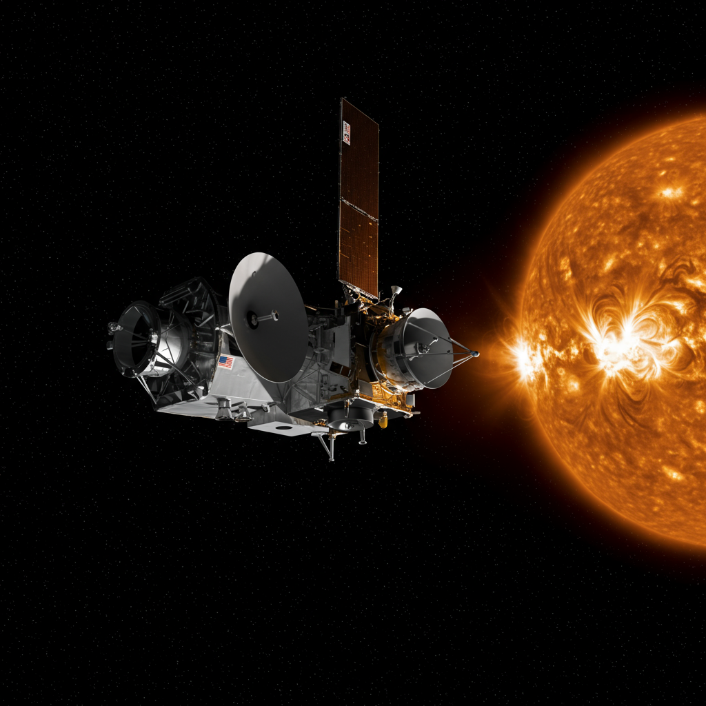

Sonda SOHO
Agencia: NASA / ESA
Fecha de lanzamiento: 2 de diciembre de 1995
Tipo de misión: Observatorio solar espacial
Posición orbital: Punto de Lagrange L1 entre la Tierra y el Sol
Instrumentación: Telescopios ultravioleta, espectrómetros, coronógrafos, detectores de viento solar
Significado del nombre
SOHO significa Solar and Heliospheric Observatory, que en español es Observatorio Solar y Heliosférico.
Misión y actividades
SOHO está diseñado para estudiar el Sol y la heliosfera con una precisión sin precedentes. Se encarga de:
- Monitorear el viento solar y las eyecciones de masa coronal.
- Estudiar la estructura y dinámica de la corona solar.
- Observar las manchas solares y la actividad solar que puede afectar la Tierra.
- Proporcionar alertas tempranas de tormentas solares para proteger satélites y redes eléctricas.
Impacto histórico
Desde su lanzamiento, SOHO ha revolucionado nuestra comprensión del Sol y sus efectos en el sistema solar. Ha detectado miles de cometas y ha sido clave para la predicción del clima espacial, vital para la seguridad de astronautas y tecnologías en la Tierra.